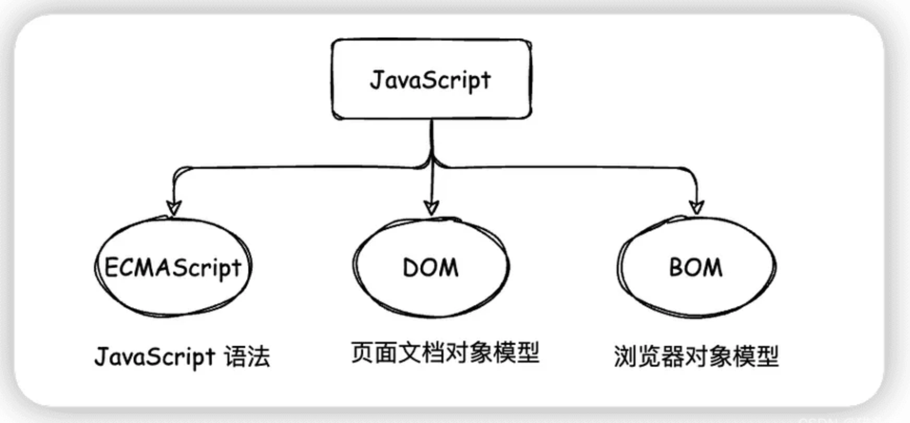
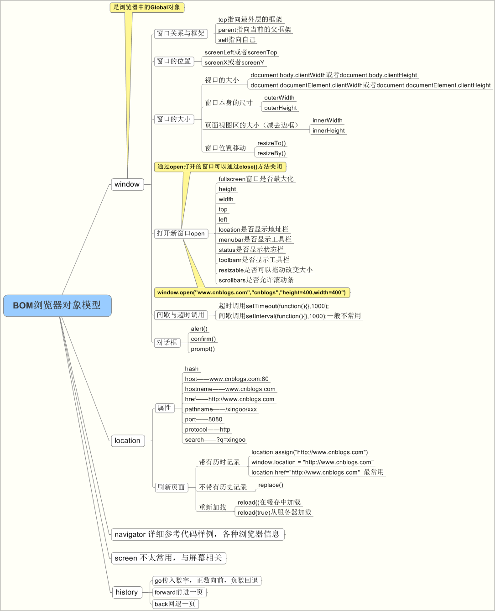
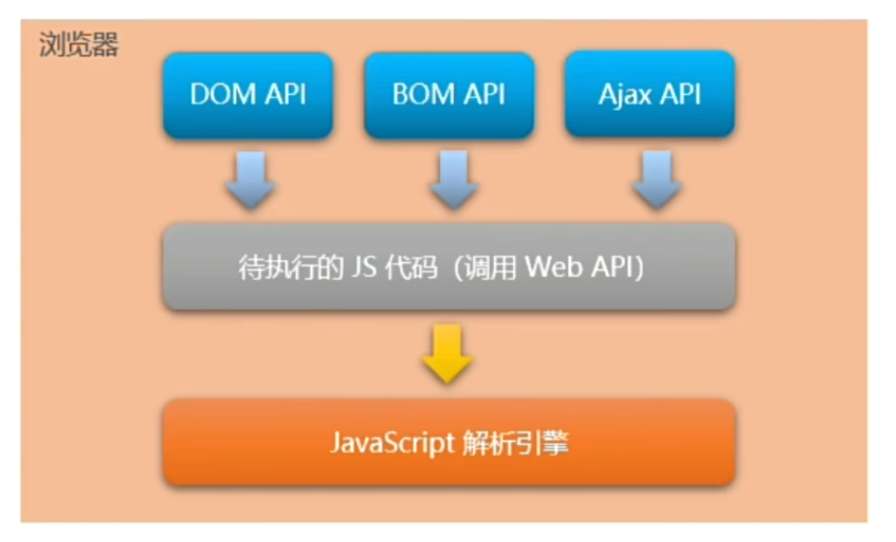

回顾一下 node.js 基础知识~
Node.js 基础知识
浏览器中的 JavaScript 的组成部分

为什么 JavaScript 可以在浏览器中被执行？
浏览器会将待执行的 JS 代码经过 JavaScript 解析引擎解析。
不同的浏览器使用不同的 JavaScript 解析引擎：
- Safari ：WebKit
- Chrome for iOS ：WebKit
- Chrome for Android/macOS/Windows ： Blink + V8
- FireFox ：Gecko + SpiderMonkey
为什么 JavaScript 可以操作 DOM 和 BOM？ 每个浏览器都内置了 DOM、BOM 这样的 API 函数，因此，浏览器中的 JavaScript 才可以调用他们。
window 是 BOM 的核心对象，代表浏览器窗口。它既是全局对象，也是其他 BOM 对象的顶层容器。


浏览器中的 JavaScript
- V8 引擎负责解析和执行 JavaScript 代码
- 内置 API 是由运行环境提供的特殊接口，只能在所属的运行环境中被调用。
fs 文件系统模块
fs 模块是 Node.js 官方提供的、用来操作文件的模块，它提供了一系列的方法和属性，用来满足用户对文件的操作要求。
例如：
- fs.readFile() 方法，用来读取指定文件中的内容
- fs.writeFile() 方法，用来向指定的文件中写入内容
import * as fs from 'node:fs';
fs.readFile('./files/11.txt', function(err, dataStr) {
console.log(err);
})
import * as fs from 'node:fs';
fs.writeFile('./files/11.txt', 'hello', function(err, dataStr) {
console.log(err);
})
在使用 fs 模块操作文件时，如果提供的操作路径是以 ./ 或 ../ 开头的相对路径时，很容易出现路径动态拼接错误的问题。
原因：代码在运行的时候，会以执行 node 命令时所在的目录，动态拼接出被操作文件的完整路径。
解决方案：在使用 fs 模块操作文件时，直接提供完整的路径，不要提供 ./ 或 ../ 开头的相对路径，从而防止路径动态拼接的问题。
path 路径模块
path 模块是 Node.js 官方提供的模块，它提供了一系列的方法和属性，用来满足用户对路径的处理需求。
例如：
- path.join() 方法，用来将多个路径片段拼接成一个完整的路径字符串
- path.basename() 方法，用来从路径字符串中，将文件名解析出来
path.join() 的语法格式
使用 path.join() 方法，可以把多个路径片段拼接为完整的路径字符串：
import * as path from 'node:path';
const pathStr = path.join('/a', '/b/c', '../', './d', './e')
console.log(pathStr) // 输出 /a/b/d/e
const pathStr2 = path.join(__dirname, './files/1.txt')
console.log(pathStr2) // 输出 当前文件所在目录/files/1.txt
注意：今后凡是涉及到路径拼接的操作，都要使用 path.join() 方法进行处理，不要直接使用 + 进行字符串的拼接。
path.basename() 的使用
使用 path.basename() 方法，可以从一个文件路径中，获取到文件的名称部分：
import * as path from 'node:path';
const fpath = '/a/b/c/index.html' // 文件的存放路径
var fullName = path.basename(fpath);
console.log(fullName) // 输出 index.html
var nameWithoutExt = path.basename(fpath, '.html')
console.log(nameWithoutExt) // 输出 index
path.extname() 的使用
用 path.extname() 方法，可以获取路径中的扩展名部分
import * as path from 'node:path';
const fpath = '/a/b/c/index.html' // 文件的存放路径
var fext = path.extname(fpath);
console.log(fext) // 输出 .html
http 模块
在网络节点中，负责消费资源的电脑，叫做客户端；负责对外提供网络资源的电脑，叫做服务器。
http 模块是 Node.js 官方提供的，用来创建 web 服务器的模块，通过 http 模块提供的 http.createServer() 方法，就能方便的把一台普通的电脑，变成一台 web 服务器，从未对外提供 web 资源服务。
服务器相关概念
IP 地址就是互联网上每台计算器的唯一地址，因此 IP 地址具有唯一性，如果把 “个人电脑” 比作 “一台电脑”，那么 “IP 地址” 就相当于 “电话号码”，只有在知道对方 IP 地址的前提下，才能与对应的电脑之间进行数据通信。
注意：
- 互联网中每台 Web 服务器，都有自己的 IP 地址，例如： 大家可以在终端 ping www.baidu.com 命令，即可查看到百度服务器的 IP 地址。
- 在开发期间，自己的电脑就是一台服务器，也是一个客户端，为了方便测试，可以在自己的浏览器中输入 127.0.0.1 这个 IP 地址，酒呢把自己的电脑当做一台服务器进行访问。
域名和域名服务器
尽管 IP 地址能够唯一标记网络上的计算机，但是 IP 地址是一长串数字，不直观，而且不便于记忆，于是人们又发明了另一套字符型的地址方案，即所谓的域名地址。
IP 地址和域名是一一对应的关系，这份对应关系存放在一种叫做域名服务器的电脑中，使用者只需通过好记的域名访问对应的服务器即可，对应的转换工作由域名服务器实现。因此，域名服务器就是提供 IP 地址和域名之间的转换服务的服务器。
注意：
- 单纯使用 IP 地址，互联网中的电脑也能够正常工作，但是有了域名的加持，能让互联网的世界变得更加方便。
- 在开发测试期间，127.0.0.1 对应的域名是 localhost，它们都代表我们自己的这台电脑，在使用效果上没有任何区别。
端口号
计算机中的端口号，就好像是现实生活中的门牌号，外卖小哥可以在整栋大楼众多的房间中，准确把外卖送到你的手中。
同样的道理，在一台电脑中，可以运行成百上千个 web 服务，每个 web 服务都对应一个唯一的端口号，客户端发送过来的网络请求，通过端口号，可以被准确的交给对应的 web 服务进行处理。
注意：
- 每个端口号不能同时被多个 web 服务占用
- 在实际应用中， URL 中的 80 端口可以被省略
创建最基本的 web 服务器
- 导入 http 模块
- 创建 web 服务器实例
- 为服务器实例绑定 request 事件，监听客户端的请求
- 启动服务器
import * http path from 'node:http';
const server = http.createServer()
// 使用服务器实例的 .on() 方法，为服务器绑定一个 request 实践
server.on('request', (req, res) => {
// 只要有客户端来请求我们自己的服务器，就会触发 request 事件，从而调用这个事件处理函数
console.log('Some visit our web server.')
// req 是请求对象，它包含了与客户端相关的数据和属性
// req.url 是客户端请求的 url 地址
// req.method 是客户端的 method 请求类型
const str = `request url ${req.url}, request method ${req.method}`
console.log(str)
// 为了防止中文显示乱码问题，需要设置响应头 Content-Type
res.setHeader('Content-Type', 'text/html;charset=utf-8')
// res.end() 方法作用
// 向客户端发送指定的内容，并结束这次请求的处理过程
res.end(str)
})
// 调用 server.listen(端口，cb回调)方法，即可启动 web 服务器
server.listen(80, () => {
console.log('http serv')
})
模块化
模块化的基本概念
模块化是指解决一个复杂问题时，自顶向下逐层把系统划分成若干模块的过程，对于整个系统来说，模块是可组合，分解和更换的单元。
编程领域中的模块化，就是遵守固定的规则，把一个大文件拆成独立并互相依赖的多个小模块。
好处：
- 提高代码的复用性
- 提高代码的可维护性
- 可以实现按需加载
模块化规范就是对代码进行模块化的拆分与组合时，需要遵守的那些规则。
- 使用什么样的语法格式来引入模块
- 在模块中使用什么样的语法格式向外暴露成员
模块化规范的好处：大家都遵守同样的模块化规范写代码，降低了沟通的成本，极大方便了各个模块之间的互相调用，利人利己。
Node.js 中模块的分类
Node.js 中根据模块来源的不同，将模块分为 3 大类，分别是：
- 内置模块：由 Node.js 官方提供，例如 fs、path、http 等
- 自定义模块： 用户创建的每个 js 文件，都是自定义模块
- 第三方模块：由第三方开发出来的模块，并非官方提供的内置模块，也不是用户创建的自定义模块，使用前需要先下载
Node.js 中模块作用域
和函数作用域类似，在自定义模块中定义的变量、方法等成员，只能在当前模块内被访问，这种模块级别的访问限制，叫做模块作用域。
好处：防止全局变量污染的问题
向外共享模块作用域中的成员
在自定义模块中，可以使用 module.exports 对象，将模块内的成员共享出去，供外界使用。
外界用 require() 方法导入自定义模块时，得到的就是 module.exports 所指向的对象。
// 向 module.exports 对象上挂载 username 属性
module exports.username = 'zs'
// 向 module.exports 对象上挂载 sayHello 方法
module.exports.sayHello = function() {
console.log('Hello!');
}
module.exports.age = age;
共享成员注意点：使用 require() 方法导入模块时，导入的结果，永远以 module.exports 指向的对象为准。
exports 对象
由于 module.exports 单词写起来比较复杂，为了简化向外共享成员的代码，Node 提供了 exports 对象。默认情况下，exports 和 module.exports 指向同一个对象。最终共享的结果，还是以 module.exports 指向的对象为准。
exports 和 module.exports 的使用误区
外界用 require() 方法导入自定义模块时，得到的就是 module.exports 所指向的对象。
Common.js 模块化规范
Common.js 规定：
- 每个模块内部，module 变量代表当前模块
- module 变量是一个对象，它的 exports 属性（即 module.exports）是对外的接口
- 加载某个模块，其实是加载该模块的 module.exports 属性，require() 方法用于加载模块。
模块的加载机制
优先从缓存中加载
模块在第一次加载后会被缓存，这也意味着多次调用 require() 不会导致模块的代码被执行多次。 注意：不论是内置模块，用户自定义模块，还是第三方模块，它们都会优先从缓存中加载，从而提高模块的加载效率。
内置模块的加载机制
内置模块是由 Node.js 官方提供的模块，内置模块的加载优先级最高
例如，require(‘fs’) 始终返回内置的 fs 模块，即使在 node_modules 目录下有名字相同的包也叫做 fs。
自定义模块的加载机制
使用 require() 加载自定义模块时，必须指定以 ./ 或 ../ 开头的路径标识符，在加载自定义模块时，如果没有指定 ./ 或 ../ 这样的路径标识符，则 node 会把它当做内置模块或第三方模块进行加载。
同时，在使用 require() 导入自定义模块时，如果省略了文件的扩展名，则 Node.js 会按顺序分别尝试加载一下的文件：
- 按照确切的文件名进行加载
- 补全 .js 扩展名进行加载
- 补全 .json 扩展名进行加载
- 补全 .node 扩展名进行加载
- 加载失败，终端报错
第三方模块的加载机制
如果传递给require() 的模块标识符不是一个内置模块，也没有以 ./ 或 ../ 开头，则 Node.js 会从当前模块的父目录开始，尝试从 /node_modules 文件夹中加载第三方模块。
如果没有找到对应的第三方模块，则移动到再上一层父目录中，进行加载，直到文件系统的根目录。
目录作为模块
当把目录作为模块标识符，传递给 requie() 进行加载的时候，有三种加载方式：
- 在被加载的目录下查找一个叫做 package.json 的文件，并寻找 main 属性，作为 require() 加载的入口
- 如果目录里没有 package.json 文件，或者 main 入口不存在或无法解析，则 Node.js 将会试图加载目录下的 index.js 文件
- 如果以上两步都失败了，则 Node.js 会在终端打印错误消息，报错模块缺失： Error:Cannot find module ‘xxx’